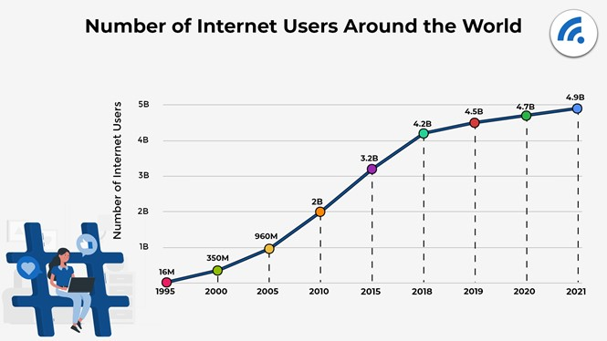
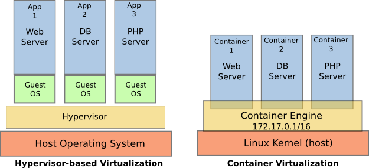

Introducción
Inicios
Las tecnologías web han revolucionado el desarrollo de aplicaciones. En los primeros momentos de la Web, esta se limitaba únicamente a solicitar ficheros de texto a servidores sencillos, dentro de estos ficheros de texto se tenía simple código HTML.
HTML es el acrónimo de HyperText Markup Language, y en el nombre define la característica principal que ha hecho triunfar la web y HTML, el HypertText, y más concretamente usando un tipo concreto como son los hipervínculos. Estos permiten «navegar» entre diferentes documentos existentes simplemente pulsando sobre el hipertexto, también conocido como enlace.
En 1991 Tim Berners-Lee, físico que trabajaba en el CERN, perdía mucho tiempo en comprobar las referencias a artículos científicos de otros artículos. Era necesario buscar la revista de forma física y dentro el artículo para comprobar los datos. Ideo un lenguaje (HTML) para redactar estos artículos científicos que permitiera leerlos desde un navegador web, accediendo a un servidor web , usando un protocolo del nivel de aplicación sencillo HTTP, pudiendo moverse a las referencias de otros artículos simplemente pulsando en los enlaces, además de añadir otras características como imágenes o vídeo.
Evolución
El uso de Internet experimento un crecimiento exponencial desde su aparición, apareciendo a lo largo de los años nuevas tecnologías que ampliaban las funcionalidades como contenido dinámico en el servidor o modificaciones en la parte del cliente.
{kind=link}
En el cliente/navegador
Al mismo tiempo que el servidor añadió nuevas funcionalidades para generar contenido dinámico, en el cliente se produjeron evoluciones en cuanto a:
HTML. Lenguaje de marcado HTML 1.0. 2.0, 3.2….
Javascript. Lenguaje de programación en el cliente para validaciones, modificación del árbol HTML o animaciones entre otras. Aparece por primera vez en el navegadorNetscapete en el año 1995.
CSS. Siglas de Cascading Style Sheets. Permite separar el contenido del documento de su aspecto. La primera versión de W3C oficial aparece en 1996, existiendo diferentes versiones a lo largo del tiempo.
Nota
- En el camino se han quedado tecnologías como Flash de Macromedia(ahora Adobe) o Silverlight de Microsoft.
Durante muchos años el desarrollo en el cliente fue un infierno al no cumplir IE los estándares de W3C.
En el servidor
Surgio la necesidad de poder generar contenido dinámico dependiendo de diferentes parámetros como el usuario, el día u otra información, aparaciendo los lenguajes de servidor. En los primeros instantes simples guiones en los que se generaba HMTL escribiendo en la salida estándar a partir de la URL, evolucionando para facilitar el tratamiento de los parámetros de entrada, gestión de protocolo HTTP o gestión de sesiones entre otros. En los primeros tiempos los lenguajes fueron PHP, Java con los JSP, Basic con ASP usándose también Perl o Python, aunque fueron menos populares.
Junto con el desarrollo de los lenguajes se desarrollaron los servidores web, encargados de recibir las peticiones, pasar la petición HTTP al programa, recoger la salida de la ejecución del programa (HTML) y enviarlo en la respuesta al cliente. Los más conocidos fueron y siguien siendo Apache y en menor medida Internet Information Service, aunque en los últimos tiempo ha alcanzado gran popularidad Nginx. Estos pasan de ser meros lectores de ficheros estáticos a permitir gestionar usuarios, ejecutar programas en diferentes lenguajes, extender su funcionalidad con módulos o permitir varias páginas web en el mismo servidor. Además también se hizo necesario almacenar información variada como claves, usuarios, precios…, siendo las bases de datos relacionales la opción más usual, en especial Mysql.
Actualidad
Las tecnologías anteriores en sus inicios, en especial los lenguajes de programación tanto en el servidor como en el cliente no cumplian con los principios básicos de los lenguajes orientados a objetos, falta de estandarización, eliminación de funciones, clases y/o métodos en cada nueva versión.
- Actualmente las tecnologías web han alcanzado una gran madurez, ampliando su uso no solo a su ámbito clásico, sino a práctiamente todo el desarrollo software
- (es posible desarrollar aplicaciones de escritorio usando tecnologías web, y de la misma forma aplicaciones nativas utilizan el protocolo HTTP para obtener
información externa), además se han añadido técnicas y principios de ingeniería del software propio de grandes proyectos.
Cliente
Los navegadores cumplen en su mayoria los estándares de W3C.
HTML5 define nuevas etiquetas semánticas, añade API’s con Javascript para arrastrar y soltar, trabajar offline, geolocalización ,almacenamiento, comunicaciones con WebSockets y paralelismo con hilos de ejecución. Las nuevas versiones de Javascript (a partir de ECMAScript 2015), permite programar siguiendo el paradigma Orientado a Objectos, antes orientados a prototipos. Soporta la programación funcional con funciones lambda.
El lenguaje Typescript de Microsoft añade nuevas características a Javascript como el tipado de datos, clases o anotaciones. Es necesario realizar una transpilación (traducción entre lenguajes del mismon nivel de abstracción) a Javascript.

CSS3 ha anadido sporte para animaciones y transiciones, definición de variables. Tecnologias que acercan el CSS3 a los lenguajes de programación (variables, funciones, operadores…) como SASS o LESS que permiten compilar ficheros en estos formatos a CSS3.
{kind=link}
Servidor
- En el lado del servidor, los lenguajes de programación han madurado para poder aplicar técnicas de ingenieria del software como librerías para las pruebas automáticas
de todo tipo, frameworks que implementan platrones de diseño o métricas para medir la calidad del sofware.
Los servidores web no han evolucionado mucho, pero si el soporte sobre el cual se ejecuta, pasando de una máquina física a utilizar técnicas de virtualización para garantizar un funcionamiento optimo, añadiendo balanceadores de carga o tecnologías como Kubernates para garantizar la escalabilidad, el despligue o la alta disponibilidad.
{kind=link}
En base de datos se continua usando mayoritariamente bases de datos relacionales aunque las bases de datos orientadas a documentos ( Mongo DB) o orientasdas a «clave-valor» (Casandra)
Despliegue
Las aplicaciones web actuales medias y grandes son complejas de gestionar, tanto en su desarrollo como en puesta en producción, ya que intervienen muchos elementos:
Código fuente.
Compilación.
Pruebas en servidor.
Configuración de servidores.
Configuración de base de datos.
Desarrollo en cliente.
Transpilación.
Integración.
Pruebas cliente.
Puesta en producción.
Documentación de código y proceso.
Existiendo multitud de herramientas para las tareas anteriores como es la virtualización (Docker, Kubernates), despliegue continio (Maven, Gladle), librerías de pruebas, servidores de control de versiones o automiatización de todo el proceso como Jenkins.
En este tema se tratan los diferentes actores que intervienen en las arquitecturas web, la evolución de los modelos desde los inicios hasta la actualidad con los sistemas de cluster y las plataformas como servicio, junto con sus características, finalizando con los detalles del protocolo que sustenta la mayor parte del tráfico de aplicaciones, HTTP.